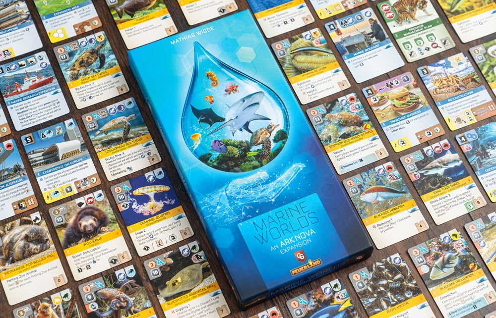

Ark Nova: Marine Worlds
Mathias Wigge · 2023 · Expansion for Ark Nova

Marine Worlds at a Glance
Marine Worlds adds sea animals, small and large aquariums, special Action cards, and a new university to Ark Nova. It also expands the Animal, Sponsor, Conservation Project, Final Scoring, and bonus-tile pools. Sea animals are the most visible addition, but action selection, the public display, card access, and personal map planning all change with them.
Most of these changes enter systems that the base game already uses instead of establishing a separate module with its own recurring administration. The expansion adds a great deal of content while keeping its added burden comparatively restrained.
Marine Worlds therefore receives an S quality tier and a Usually Include recommendation. A first teaching game can stay with the base game; once players understand its structure, Marine Worlds fits naturally into most later sessions.

Special Action Cards Reopen Five Familiar Actions
Marine Worlds supplies four special versions of each of the base game's five actions. During setup, every player drafts two and replaces the corresponding standard Action cards. They still perform the familiar Build, Animals, Cards, Association, or Sponsors action, but add another benefit or loosen an existing restriction. They are stronger and more individual versions of familiar actions.
The design creates different operating ranges from the opening without asking players to learn another action system. A map, an initial direction, and two special Action cards can form natural combinations, while the same base action acquires a different rhythm from one game to the next. With very little local rules cost, the expansion adds asymmetry and turns the five cards used throughout every session into another source of replayability.
The cards are not perfectly equal in general usefulness. Some pay off across many routes, while others depend more heavily on a map, a card sequence, or a particular plan. Drafting lets players choose around their conditions and avoids the larger gap that random distribution could create, but it cannot erase every difference in strength and flexibility. This is a real, bounded source of opening variance rather than a reason to dismiss the system's larger gain.
Sea Animals Enter The Existing Zoo Map
Sea animals live in small or large aquariums. These special enclosures can house multiple matching animals and must be built beside water, bringing water adjacency and long-term capacity into the existing spatial puzzle. Players are still planning one zoo map; the location of water, the room required later, and the number of animals an aquarium can hold now join the build-order calculation.
This addition does not create another board or currency. It asks new animals to compete for space inside the planning problem that already exists. The rule is easy to understand, while placement limits and future capacity continue to produce decisions. Aquariums add play without materially raising the local learning cost.
Reef Dwellers Create A Rare, Distinct Route
Playing a Reef Dweller triggers its own Reef effect and reactivates the Reef effects of every earlier Reef Dweller in that player's zoo. Immediate abilities can therefore grow into a linked internal route, and each later Reef Dweller reuses effects established by earlier investments. Sea animals gain a real construction direction instead of differing only in theme and card art.
Ark Nova's deck is enormous, so players do not assemble a complete Reef chain frequently. In most games, Reef Dwellers are a set of opportunities that can support one another; in the occasional game where the route fully develops, it becomes a memorable highlight. Strong chains are not consistent enough to dominate the environment, so snowballing remains a minor concern rather than the mechanism's defining problem.
Wave Makes Display Time Matter
When a card with a Wave icon enters the public display, the card at the left end is discarded and another card is added. The mechanism first compensates for the larger deck: old cards leave more quickly, and new cards enter public information sooner.
Its more interesting effect is that the display no longer feels completely stable. A player who sees a desirable card cannot always assume it will survive until the next Cards action; a Wave revealed by another player may remove it first. Taking a card, racing for it, or leaving it behind therefore gains another timing decision. Wave does add uncontrollable movement, especially as more players turn the display over faster, but that movement creates urgency and meaningful choices rather than only noise.
A New University Gives The Deck Direction
The new university supplies a research icon and an animal-category icon chosen by the player, then reveals cards until the first matching animal icon appears. It does not guarantee one exact power card, but it narrows a blind search toward a category the player actually needs. That guidance matters in a deck as large as Ark Nova's.
The animal icon can support Conservation Projects, prerequisites, and route planning, while the research icon remains connected to existing requirements. Only one player can claim the new university between two Breaks, so this is not an unconditional source of stability. It becomes a public Association-action window: players must decide both which category matters and whether they need to act before an opponent takes the opportunity.
Replayability Through New Mechanisms And Combinations
Marine Worlds improves replayability through more than raw card count. Reef Dwellers create an internal route, Wave changes the lifetime of public cards, special Action cards alter each player's operating range from setup, and the new university gives a huge deck a more deliberate search direction. These mechanisms cross within the same game, so the expansion is not a set of isolated events waiting to be drawn.
New Final Scoring cards, Conservation Projects, and bonus tiles continue to widen each session's direction without needing separate systems of their own. Together they create more combinations across opening goals, middle-game routes, and endgame judgment. With more players, Wave turns the display over faster and makes public opportunities more urgent; with fewer, visible cards remain stable for longer and plans have more time to develop. Marine Worlds remains functional across those different rhythms.
Usually Include After Learning The Base Game
Ark Nova already contains many mechanisms, icons, and card relationships. Teaching aquariums, Reef Dwellers, Wave, the special Action-card draft, and the new university at the same time adds a layer of cognitive load that a first game does not need. Letting players first understand the five Action cards, Association board, public display, and zoo map makes the expansion's contributions easier to recognize later.
Once the base game is familiar, the new content does not split play into separate systems. Special Action cards still govern the original five actions, aquariums remain part of the zoo map, Wave acts on the public display, and the new university expands the Association board. Each makes a local change; together they substantially improve routes, timing, and replayability.
The final judgment is S / Excellent Expansion, with a Usually Include recommendation. Special Action cards are not identical in flexibility, and the more volatile display will occasionally erase a plan earlier than expected. Even with those costs, the added richness far exceeds the added burden, and every major mechanism finds a natural, durable place inside Ark Nova.